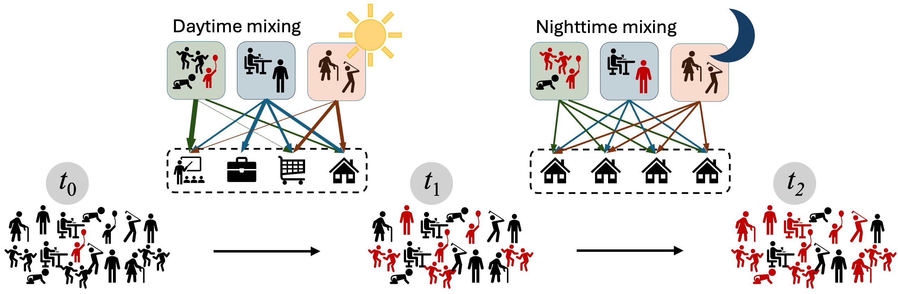
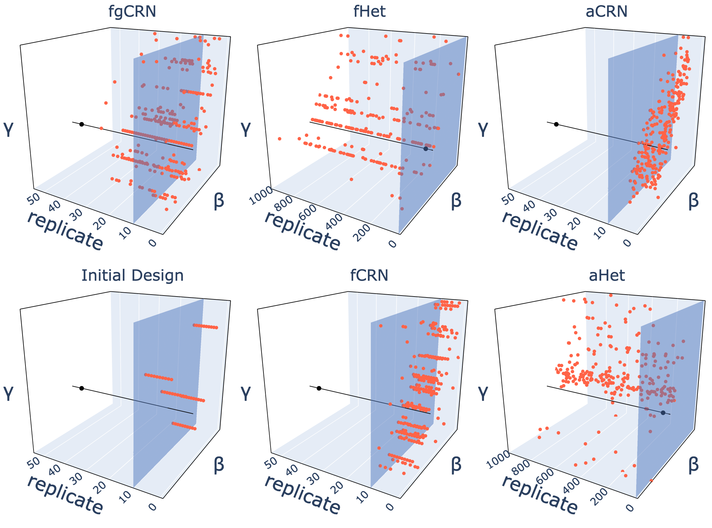
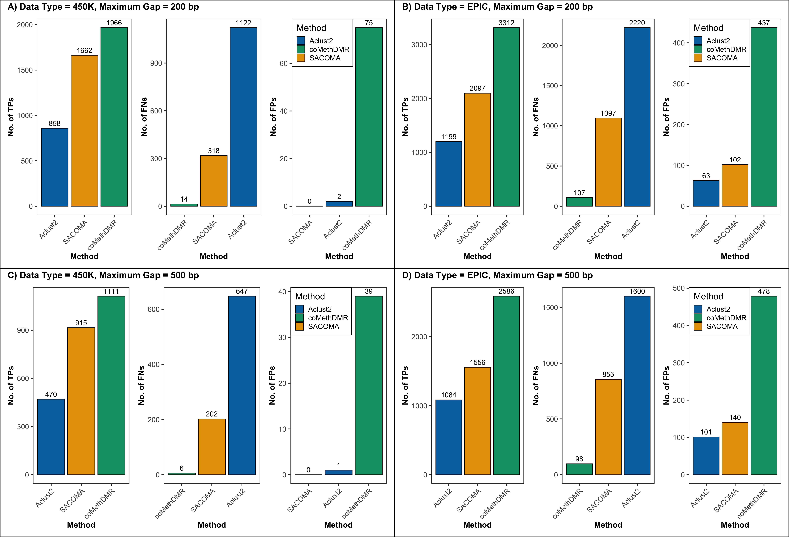
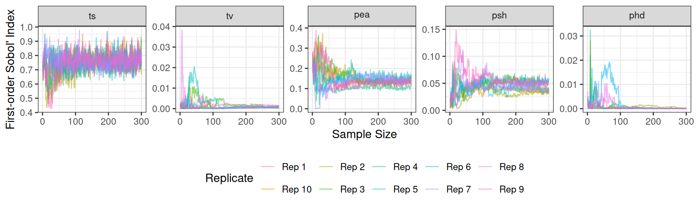
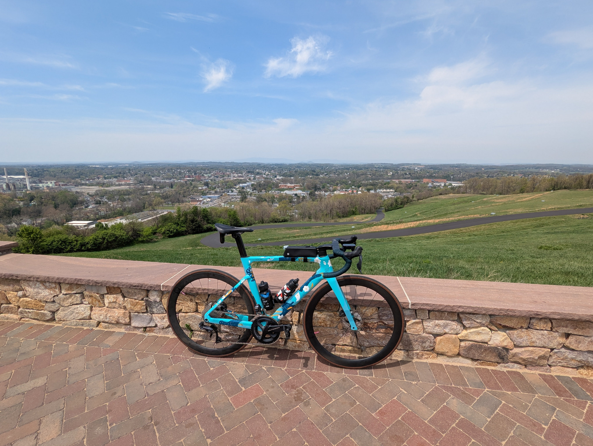

About Me
Welcome! I am an assistant computational statistician at Argonne National Laboratory, where I work on developing and applying statistical and machine learning methods to solve complex scientific problems.
My research focuses on uncertainty quantification, calibration of computer models, and developing scalable computational methods for large-scale scientific applications. I received my Ph.D. in Statistics from Virginia Tech and have been at Argonne since 2019.
Recent Publications

Developing and Deploying a Use-Inspired Metapopulation Modeling Framework for Detailed Tracking of Stratified Health Outcomes
Authors: Fadikar, A., Stevens, A., Rimer, S., Martinez-Moyano, I., Collier, N., et al.
Proceedings of the 2025 Winter Simulation Conference (WSC), 2025
Presents MetaRVM, an open-source metapopulation modeling framework co-developed with the Chicago Department of Public Health for detailed stratified tracking of infectious disease outcomes and operational decision support.

Adaptive Grid-Based Thompson Sampling for Efficient Trajectory Discovery
Authors: Fadikar, A., Stevens, A., Binois, M., Collier, N., Ozik, J.
arXiv preprint, 2025
Proposes a trajectory-oriented Bayesian optimization framework with adaptive grid-based Thompson sampling to more efficiently discover data-consistent trajectories in stochastic simulation models.

A spatially-aware unsupervised pipeline to identify co-methylation regions in DNA methylation data
Authors: Meshram, S., Fadikar, A., Arunkumar, G., Chatterjee, S.
bioRxiv preprint, 2025
Introduces SACOMA, a spatially-aware unsupervised framework for identifying co-methylated genomic regions by combining spatial proximity and methylation similarity with data-adaptive clustering.

Automation and Collaboration in Complex Epidemiological Workflows with OSPREY
Authors: Ozik, J., Collier, N., Fadikar, A., Wozniak, J., Hayot-Sasson, V., et al.
Workshop Proceedings of the 54th International Conference on Parallel Processing, 2025
Describes OSPREY, a platform for automating and coordinating complex epidemiological modeling workflows, improving reproducibility and collaboration across teams working with high-cost computational pipelines.
Recent and Upcoming Talks
Beyond Research
Trying my hands on espresso and latte art.

My daily driver, I call it Groot.
It's the time of the year when I strap my feet to a piece of board.